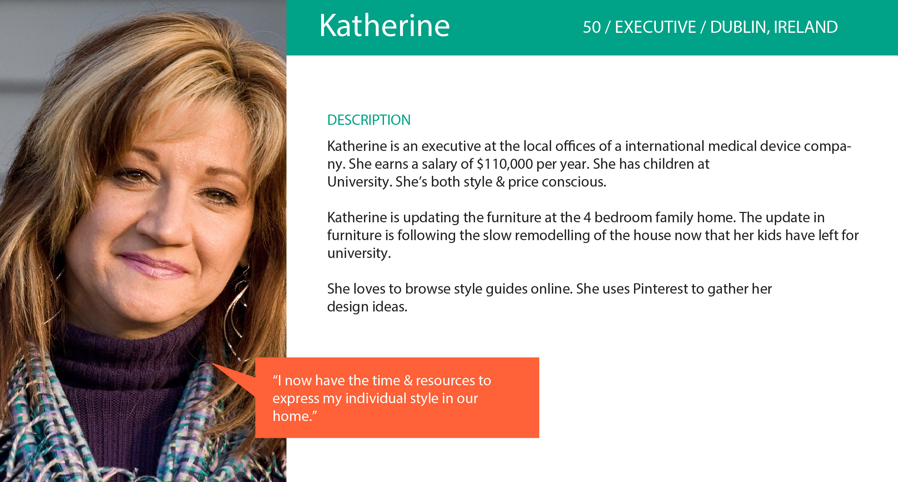
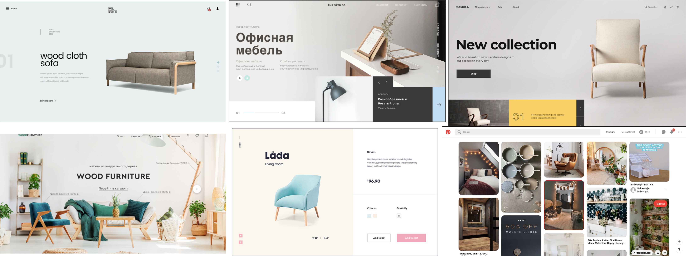
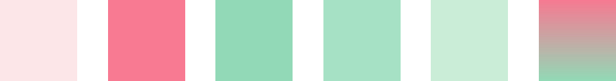
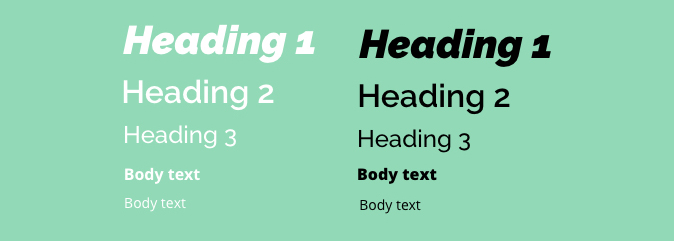
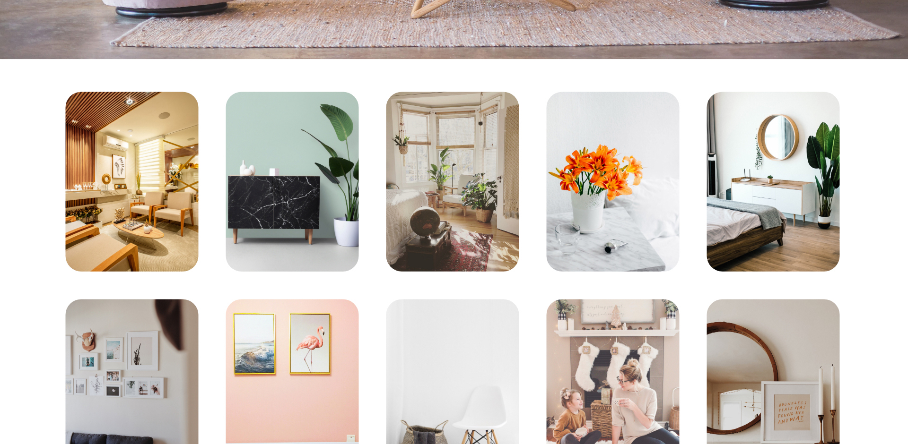
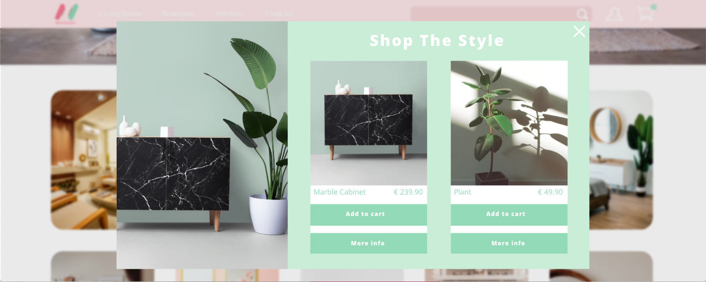
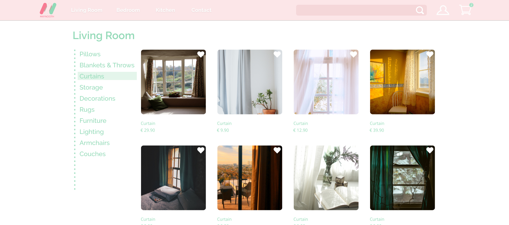

Who I worked for
- Background
- Persona 
This is a project from Udemy UX course. Maynooth furniture is a new business selling affordable high-end design furniture made in Ireland. The company wnats to build a e-commerce webiste for people to browse & purchase furniture.
What I have done
- Moodboard 
- Color theme 
- Logo
- Font 
- Wireframes
I chose the style I like for inspirations
This group of color theme I chose is to create relaxing feeling when users shopping online and also suitable for stylish purpose.
The left one is their original logo. But in this project, the instructor wanted to change the color of it. Then I modified by my theme color and used gardient color to make it nicer.
Raleway and Open Sans are a good pairing. It looks simple and easy to read.
The result
- High-fidelity prototype: https://xd.adobe.com/view/0ea1c966-f898-48b9-5ea3-ebee097f8670-7890/
- Conclusion

The landing page includes nav bar and hero image. It's functional and attractive.
If you scroll down landing page you will see these inspirations. This idea is from persona Katherine that she loves to use pinterest online and get style ideas.
Furthermore, if you click the inspiration pic, you will have a pop up like this, you can even buy it dirctly from the online store.
This is the curtain product page.
- The web prototype looks stylish and it has inspiration section which feeds persona requirements.
- I made main artboards in the prototype, which is enough to show how it works.